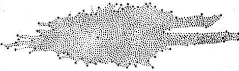
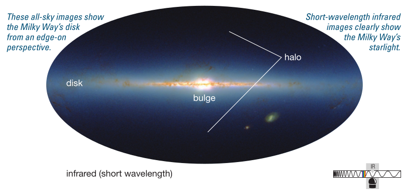

Reading: Chapter 19, 20, 21
Recap
- Top Hat Q1:
- nucleosynthesis
- Gas cycling
- disk (later)
Timeline
- Galileo: Milky way = many stars (did not solve the parallax issue existing since ancient Greece but made it less of an issue)
Siblings William and Carolina Hershel tried to map the shape of the Milky way from star counts and determined it was a flattened disk

Figure 2: Drawing by Hershel in 1785 - Recall Messier catalogs: extended "nebular sources" could be mistaken for comets within the Solar system. If was unclear whether these constituted local sources (for some meaning of local), or far away unresolved sources. N.B.: Galileo had already shown once that extended nebulae such as Orion where actually many many stars unresolved without a telescope, same "flavor" of question!
- Shapley: GC not centered around the galaxy
- Pannekoek
- Curtis & Shapley debate
Hubble, using the stellar physics insight by Henrietta Leavitt measured the distance to nebular objects.

Figure 3: Cepheids are pulsating stars: measuring the time for pulsations is easy, and Henrietta Leavitt had discovered that the period of pulsation gives the luminosity. From this, Hubble, measuring the brightness of Cepheids and their period could calculate the distance to M31.
What is a galaxy?

In the modern definition, a galaxy is a gravitationally bound system of stars (including their remnants and planets), gas, dust, and dark matter.
Size of the Milky Way and its neighborhood
The Clouds
Debate on the name (e.g., APS): Magellan was not even the first to report them in the limited context of western Europe!
Galactic dynamics
N.B.: The size of a Galaxy and its distance to the nearest galaxies are typically comparable (\(R/D\sim1\)), therefore the tides exerted by a galaxy on the next are significant, and medium-size galaxies are not in dynamical equilibrium!
N.B.: Tides are due to the difference in gravity between points of an extended body (like a Galaxy)